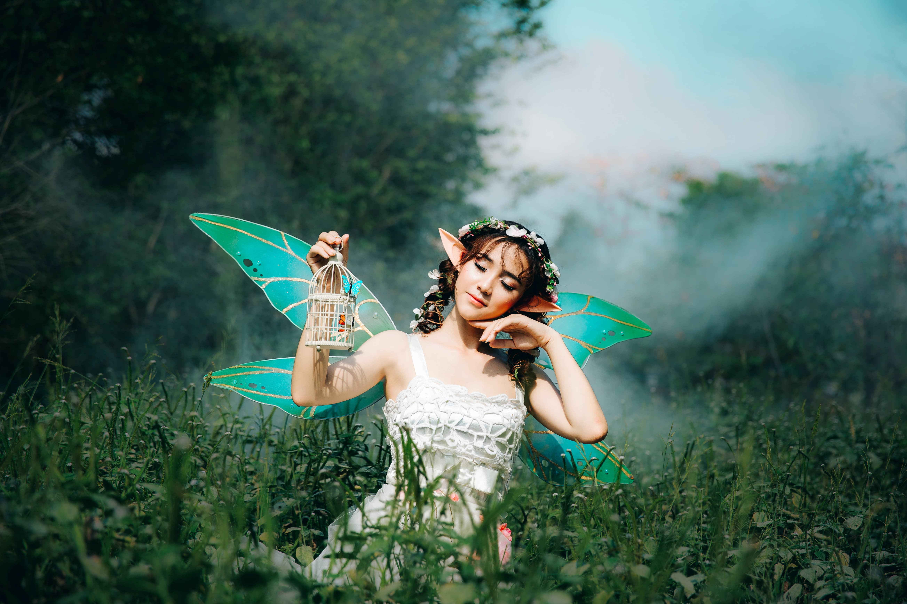

Changelings
Fae born into the mortal realm. These tricksters and shapeshifters follow their own code of honor. Easily affected by madness some can no longer differ between reality and dream. Cold Iron will cause grievous wounds even by the merest touch.

Hunters
These stalwart men and women are the defenders of humanity. Each one an exemplar of virtue yet thrust into a world not their own. Allies can be found within us.